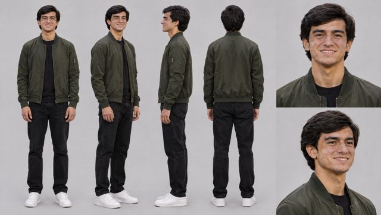

Pepsi Ramazon «Махалля» — раскадровка и Seedance
Ролик 40 секунд = две генерации Seedance 2.5 по 20 секунд. 33 коротких кадра со склейками на долю, но снято как живая документалка: камера ловит моменты, никто не позирует и не смотрит в камеру, у каждого своё дело, ребята играют в толпе для себя и для всех.
Скачать всё одним архивомЛисты раскадровки (6 шт.)План
| Часть | Время ролика | Что внутри |
|---|---|---|
| 1 · 20 с | 0–20 с | Ифтар, строки 1–2 за дверью → дверь, «не-не-не» в тишине → строки 3–4 → дробь → дроп на 18 с |
| 2 · 20 с | 20–40 с | QR и Paynet → выигрыши → Kia → хозяин выносит Pepsi, бутылки по кругу → финальные удары и стол → пэкшот |
Склейка частей — на 20,0 с, это ровно граница такта. В монтаже кладём только master40, звук Seedance глушим. Пэкшот Pepsi × Paynet × Kia накладывается на последний кадр (38–40 с).
Раскадровка, часть 1 · 0–20 с

Кадр 10,0–1,5 с
Камера между плечами родни: длинный стол ифтара, все говорят наперебой, тянутся к плову, лепёшкам, финикам и Pepsi. В камеру никто не смотрит.
Кадр 21,5–2,5 с
Мельком из-за чьей-то руки: внучка подвигает дедушке Pepsi, он рассказывает историю и берёт бутылку не глядя.
Кадр 32,5–4,0 с
Головы поворачиваются к коридору вразнобой, ребёнок перестаёт жевать; на переднем плане размытый чайник.
Кадр 44,0–5,5 с
Хозяин в профиль из-за плеча бабушки: улыбается про себя и отодвигает стул.
Кадр 55,5–7,0 с
Камера свободно идёт за ним: коридор, он хлопает по карману, двое детей проскальзывают вперёд к двери.
Кадр 67,0–8,0 с
На уровне бедра: рука на ходу выуживает из кармана сложенные купюры.
Кадр 78,0–10,0 с
Через плечо, наполовину закрыто дверной рамой: дверь открывается (8,4 с), ребята толпятся на пороге и допевают — смотрят друг на друга и на хозяина.
Кадр 810,0–12,3 с
Сбоку на пороге: хозяин протягивает деньги, ребята смеются и отмахиваются ладонями, перебивая друг друга; хозяин пожимает плечами и убирает деньги.
Кадр 912,3–14,4 с
Через плечо очкарика на пороге: он достаёт жёлтую крышку и вертит её в пальцах, внутри код; ребята читают друг другу.
Кадр 1014,4–16,1 с
С улицы: хозяин в дверях всплёскивает руками и смеётся, ребята, читая друг другу, уже разворачиваются.
Кадр 1116,1–17,1 с
Камера бежит за ребятами, они высыпают за ворота, один оглядывается и смеётся.
Кадр 1217,1–18,0 с
Вдоль улицы разом: дёргается штора, сосед на ходу натягивает куртку в воротах, выбегают дети.
Кадр 1318,0–19,0 с
ДРОП. Низко, между ног людей: ладони бьют по барабану-банке, вокруг уже собирается толпа.
Кадр 1419,0–20,0 с
Сквозь толпу: дядя у своих ворот откручивает крышку и разглядывает код, болтая с кем-то за кадром.Раскадровка, часть 2 · 20–40 с

Кадр 1520,0–21,0 с · в части 0,0–1,0
Через плечо девушки: телефон сканирует QR на этикетке, подруга наклоняется, они болтают.
Кадр 1621,0–22,0 с · в части 1,0–2,0
Изнутри толпы: ребята бьют по барабанам в кругу и поют друг другу, вокруг люди болтают, обнимаются, передают Pepsi.
Кадр 1722,0–23,0 с · в части 2,0–3,0
Только руки: дядя посреди разговора роняет крышку в ладонь парню.
Кадр 1823,0–23,9 с · в части 3,0–3,9
Через плечо парня: вводит код в Paynet, кто-то проходит мимо на переднем плане.
Кадр 1923,9–24,9 с · в части 3,9–4,9
Ребята поют друг другу под дойры и смеются, рядом двое соседей болтают, бегают дети.
Кадр 2024,9–25,9 с · в части 4,9–5,9
Сбоку: парень жмёт кнопку и скрещивает пальцы, друзья заглядывают через плечо.
Кадр 2125,9–26,9 с · в части 5,9–6,9
Не по центру: дядя показывает тёте телефон, она смеётся и шлёпает его по руке, он отдаёт ей Pepsi.
Кадр 2226,9–27,9 с · в части 6,9–7,9
Низко из толпы: ладони на барабанах, сосед наклоняется и шутит с барабанщиком.
Кадр 2327,9–28,9 с · в части 7,9–8,9
Через плечи двух друзей: у парня загорается экран — выигрыш, они кричат.
Кадр 2428,9–29,8 с · в части 8,9–9,8
Друзья сгребают его в объятия, сосед сбоку суёт ему в руку Pepsi.
Кадр 2529,8–30,8 с · в части 9,8–10,8
Из глубины толпы: за барабанщиками вспыхивают фары Kia на подиуме, головы поворачиваются.
Кадр 2630,8–31,8 с · в части 10,8–11,8
Между поднятыми телефонами: красный бант на крыше, светящийся подиум.
Кадр 2731,8–32,8 с · в части 11,8–12,8
У калитки, мимо прохожих: девушка отдаёт бабушке Pepsi, та берёт двумя руками, они болтают.
Кадр 2832,8–33,8 с · в части 12,8–13,8
Сверху с балкона: вся площадь кружит, поворачивается к свету, чокается бутылками. Никто не позирует.
Кадр 2933,8–35,0 с · в части 13,8–15,0
Сбоку: хозяин протискивается из двери с охапкой Pepsi, придерживая дверь локтем.
Кадр 3035,0–36,0 с · в части 15,0–16,0
Наполовину закрыто прохожим: хозяин отдаёт Pepsi заводиле, тот прикладывает руку к сердцу, ребята кричат.
Кадр 3136,0–37,0 с · в части 16,0–17,0
Барабаны стихают. Камера идёт за бутылками из рук в руки, девочка несёт бутылку бабушке с дедушкой на топчан.
Кадр 3237,0–38,0 с · в части 17,0–18,0
Изнутри толпы: бутылки поднимаются по всей площади вразнобой, люди смеются и болтают.
Кадр 3338,0–40,0 с · в части 18,0–20,0
Финальные удары. Стол под перголой: Pepsi, жёлтая крышка, лепёшка, финики, чайник; соседи в боке. Пэкшот Pepsi × Paynet × Kia — в монтаже.Промпты Seedance — по 5 вариантов на часть
Тайминги у всех вариантов одной части совпадают с её аудио-рефом, рефы одинаковые. Раскадровка выше нарисована по базовой версии, варианты — другие подходы к тем же сценам.
Часть 1 · 0–20 с ролика
Seedance 2.5 · Omni Reference · 16:9 · 20 с · звук вкл · без старт-кадра · рефы для всех 5 вариантов:


Часть 1 · вариант 1 · Звук за дверью
Ритм песни с улицы проникает в дом раньше, чем её узнают: ложка, пальцы деда, силуэты за матовым стеклом. На дробь вся улица загорается фонарями по очереди. · 13 кадров
Часть 1 · вариант 2 · Глазами детей
Вся часть снята с высоты ребёнка: дети первыми слышат песню, обгоняют отца к двери, первыми выбегают на улицу и тянут за руки взрослых. · 14 кадров
Часть 1 · вариант 3 · Ритм стола
Монтаж на совпадениях форм и ритма: ложка → ладонь деда → лепёшка → дойра в двери → подброшенная крышка → барабан на дропе. · 14 кадров
Часть 1 · вариант 4 · Махалля уже знает
Параллельный монтаж: пока ребята поют у одной двери, соседи в других домах уже собираются — достают Pepsi, надевают куртки. На дробь все ворота открываются разом. · 13 кадров
Часть 1 · вариант 5 · Деньги не нужны
Комедия: вся семья наперебой суёт хозяину деньги, он гордо несёт целый веер купюр — а ребятам нужны не деньги, а Pepsi. · 14 кадров
Часть 2 · 20–40 с ролика
Seedance 2.5 · Omni Reference · 16:9 · 20 с · звук вкл · без старт-кадра · рефы для всех 5 вариантов:
 @image1C01_lead
@image2C02_red
@image1C01_lead
@image2C02_red
 @image3C03_varsity
@image3C03_varsity
 @image4C04_denim
@image4C04_denim
 @image5C05_navy
@image5C05_navy
 @image6C06_father
@image6C06_father
 @image7C07_family
@image7C07_family
 @image8C08_uncle_auntie
@image8C08_uncle_auntie
 @image9C09_girl
@image9C09_girl


@image10C10_youngman @image11L01_mahalla
@image11L01_mahalla
 @image12P01_drums_doiras
@image12P01_drums_doiras
 @image13P02_pepsi_cap
@image13P02_pepsi_cap
 @image14P03_paynet_code
@image14P03_paynet_code
 @image15P04_paynet_win
@image16P05_kia_podium
@audio1part2.mp3
@image15P04_paynet_win
@image16P05_kia_podium
@audio1part2.mp3
Часть 2 · вариант 1 · Базовый (текущий)
Та версия, что уже хорошо получилась: площадь в документальном стиле, код → призы → Kia → хозяин с Pepsi. · 19 кадров
Часть 2 · вариант 2 · Одна бутылка
Камера «передаётся» вместе с одной бутылкой Pepsi из рук в руки через всю площадь — каждая склейка на новой руке, и через эту цепочку проходит вся история с кодом и призами. · 19 кадров
Часть 2 · вариант 3 · Ритм-монтаж
Каждая склейка на удар барабана и на совпадении жестов: ладонь по барабану → палец по экрану → крышка в ладонь → звон бутылок. Больше крупных планов. · 19 кадров
Часть 2 · вариант 4 · Балкон и гуща
Чередуем общие планы с балкона и кадры из самой гущи: с каждым общим планом людей на площади всё больше, Kia вспыхивает в кадре с балкона, и вся толпа поворачивается волной. · 19 кадров
Часть 2 · вариант 5 · Тёплые мелочи
Фокус на маленьких человеческих моментах — кто-то кому-то дарит Pepsi, сажает ребёнка на плечи, мирится с соседом; призы и Kia происходят на их фоне. · 19 кадров
Аудио
- master40.mp3
Мастер для монтажа, ровно 40 с: строки 1–2 «за дверью», дверь открывается на 8,4 с, пауза-жесты 9,95–12,33 с, дроп на 18,0 с - master40.wav
То же в WAV - part1.mp3
Аудио-реф части 1 (0–20 с мастера) - part2.mp3
Аудио-реф части 2 (20–40 с мастера)
Референсы
Карточки персонажей, локаций и предметов.
Персонажи
Локации
Предметы
Если что-то пошло не так
- Seedance склеил меньше кадров, чем написано — нормально: в монтаже режем дальше, раскадровка показывает, что где.
- Путает ребят между собой — оставь карточки только заводилы, красного и очкарика, остальных он нарисует по описанию.
- Сначала черновики 480p (draft), удачные финалим в 1080p.